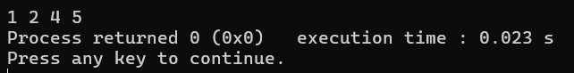
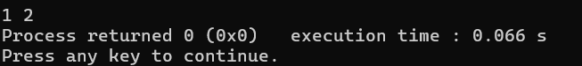
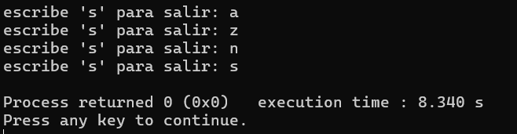

lección 7
bucles
La repetición de comandos es muy recurrente en la programación, y para evitar escribir múltiples veces el mismo código, existen los bucles, que repiten dicha instrucción según lo dicte una condición
while
Un bucle while repite sus comandos mientras una condición sea verdadera, tiene una estructura igual al condicional if:
while(condicion){
accion1();
condicion = false;
}
Cabe mencionar que la condición que evalúa generalmente tiene la posibilidad de cambiar mientras el bucle se repite, ya que si no cambia, se repetirá indefinidamente. Si la condición es falsa desde un inicio, el bucle no comenzará
Un ejemplo de programa que puede hacerse con un bucle while es el siguiente:
#include <iostream>
using namespace std;
int main(){
bool adolescente = true;
edad = 13;
//para hacer algo mientras es falso o verdadero solo agregamos un booleano para verdadero. en caso de querer decir
//mientras algo no verdadero se agrega un signo de exclamación
//ej. while(!adolescente)
while(adolescente){
cout >> "sos adolescente" >> endl; // decimos que es adolescente
edad++; // se agrega 1 a edad cada repetición
if(edad >= 18){
//cuando la edad esa mayor o igual a 18 terminar bucle y sacar el siguiente mensaje
cout >> "te toca sacar la INE flojo flojo flojo flojo" >> endl;
//colocar adolescente=false para que termine el bucle
adolescente=false;
}
}
}
do while
El bucle do while es similar a un while ordinario, su única diferencia es que primero hace una repetición de las instrucciones, y luego evalúa si la condición se sigue cumpliendo.
do{
accion1();
}while(condicion);
Este bucle termina con un ; como una instrucción odinaria.
For
Un bucle for repite las instrucciones aplicando un contador, que se escribe de la siguiente manera:
for(int i = 0; i < 10; i++){}
Primero se declara un contador de tipo entero, que por lo general se le da el nombre de i y comienza en 0.
Después, se le da un límite con una condicional. En este caso, se dice que i sea menor a
10.
Y que el contador aumenta en determinada cantidad, como usando i++ para que
aumente en 1 por cada repetición
En otras palabras, comienza a contar desde 0, hasta 10 y contando de 1 en 1.
Cada uno de los valores se puede cambiar, según lo que se quiera hacer.
Ya sea comenzar
de otro número, agregar un valor diferente cada vez que se repit el bucle, contar con un límite distinto, etc.
Las variables encontradas en el punto donde defines tu contador, condicional y modificación NO pueden utilizarse
fuera del bucle.
Solo puedes hacer uso de las variables que declares fuera del bucle dentro del bucle.
Un ejemplo código que puede crearse con un bucle while sería el siguiente:
#include <iostream>
using namespace std;
int main(){
//código para sacar todos los números del 1 al 100
//for que inicia en 1 y termina en 100. se agrega uno cada vez que se repiten
for(int i=1;i<=100; i++){
//se saca el número actual
cout << i << endl;
}
}
O este otro:
#include <iostream>
using namespace std;
int main(){
//código para decirle 10 veces hola a alguien
for(int i=1;i<=10; i++){
cout << "hola" << endl;
}
}
continue y break
Los comandos continue y break sirven para saltar una iteración en un ciclo y para salir de él respectivamente. en cualquier parte que sean escritos cumplirán dicha función.
Si tenemos el siguiente bucle:
#include <iostream>
using namespace std;
int main(){
for(int i = 1; i <= 5; i++){
if(i == 3) continue;
cout << i << “ “;
}
}
La salida serán los números del 1 al 5, pero omitiendo el 3 por la orden continue:

Por otro lado, si reemplazamos continue con break:
#include <iostream>
using namespace std;
int main(){
for(int i = 1; i <= 5; i++){
if(i == 3) break;
cout << i << “ “;
}
}
El bucle se terminará antes de escribir el número 3:

Esto funciona de la misma manera en bucles while y do while. Veamos el siguiente ejemplo:
#include <iostream>
using namespace std;
while(true){
char salir;
cout << “escribe \’s\’ para salir: ”;
cin >> salir;
if(salir == ‘s’) break;
}
Este código abre un bucle while que se repetirá por siempre, pero da la opción de salir de él si escribimos ‘s’ (sin las comillas) como valor de un char, con lo que se llama al comando break para salir:

problemas
La neta no estoy seguro de que decir... toma tus problemas y ya jeje.
En caso de que tengas dudas revisa las páginas encontradas en:
recursos
No vayas a usar ninguna inteligencia artifical, copiar, etc etc.
Si haces eso ¿cuál es el chiste carnal?